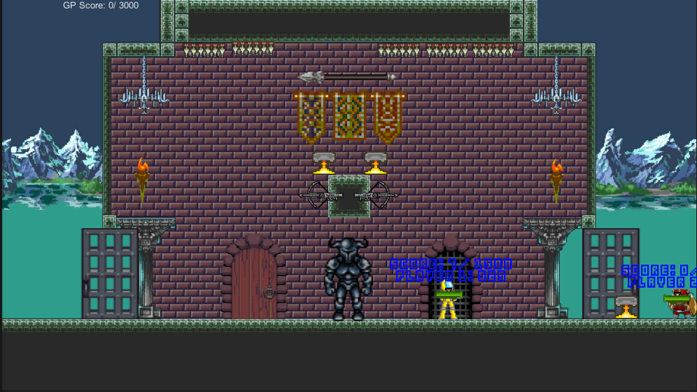
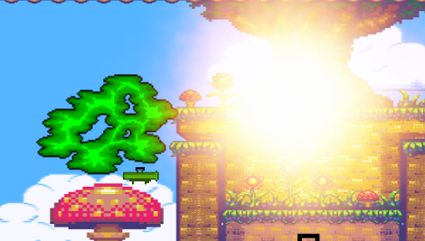
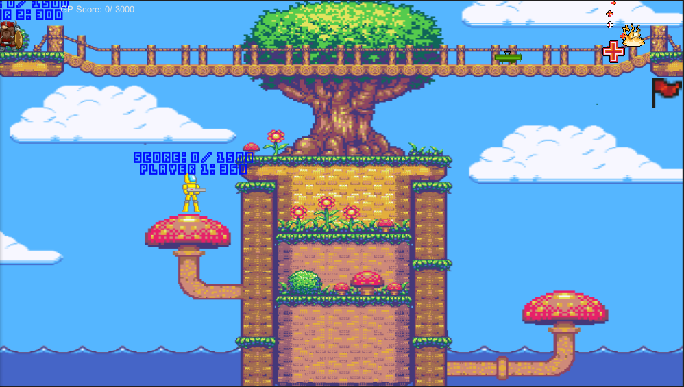
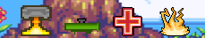
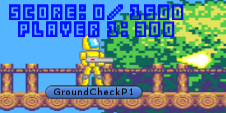
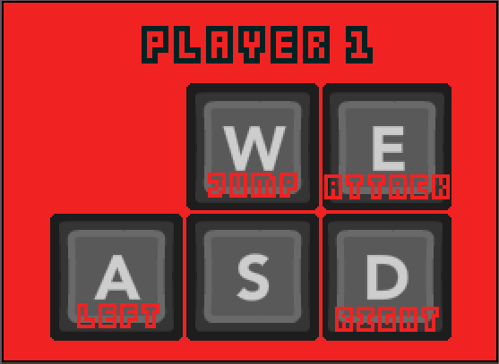
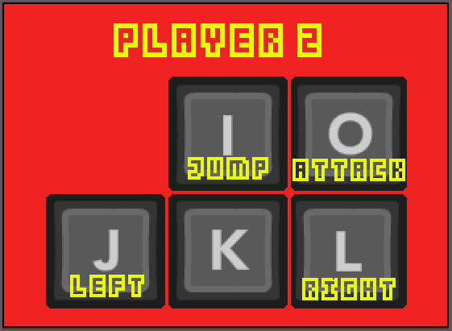
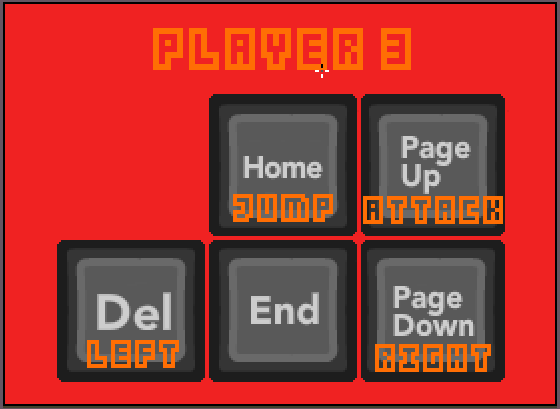
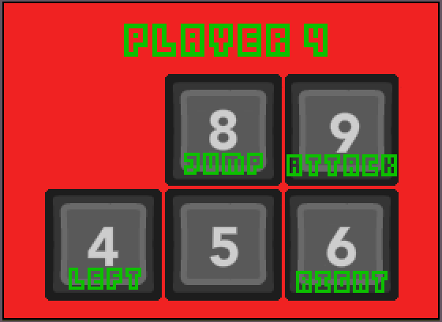
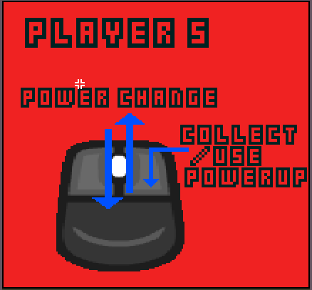

Demo:
    Before you play please make sure to check out the known issues under the demo. This will help circumvent any issues that you may have trying out the demo. Unfortunately, there are a lot of issues in the demo that are not issues with the actual build. This is a quick port just to show off some of the games features. The demo shows off one mode (death match) and one stage (haunted castle). I will not be adding any more to the demo or fixing any small issues, however if someone comes upon a game breaking issue I will fix it as soon as possible. You can always reach me at ronaldmanganaro@gmail.com. I hope you have fun playing :).
Controls:
    Description:
This game was originally developed with the Wii U Nintendo console in mind as the target platform. The idea behind the game is that up to four players fight each other while a fifth player interacts with the environment and uses powers to gain points. This was meant to be a fun party game for 5 players locally to enjoy. Originally the idea was to use all the features that the unique game controller added to the gaming experience. This type of game ports well over to pc since the mouse can be used in a similarly to how the game pad was used. At this point in time updates to the game are slow due to other time sensitive projects I am working on.
Technical Overview:
This project was built using the Unity3d game engine. Unity3d allows you to script how game object's interact with each other using either JavaScript or C#. The beauty of this game engine is a high level of abstraction allowing for quicker prototyping, while still allowing the programmer to dig deeper if there are features that they need that aren't readily available.